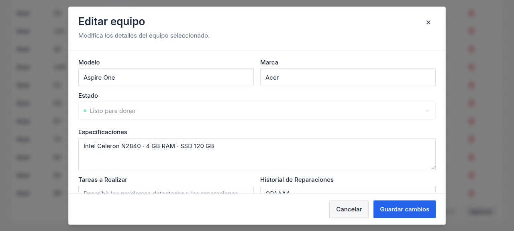
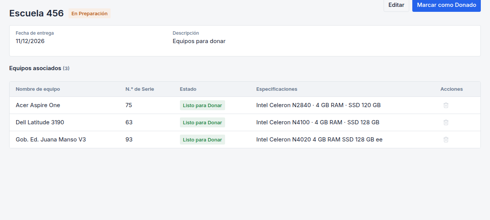
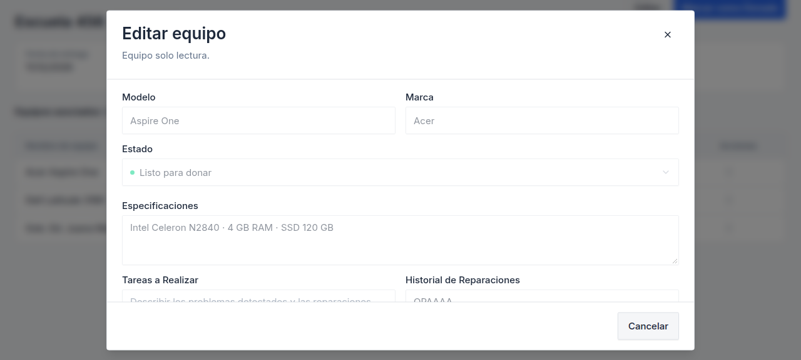
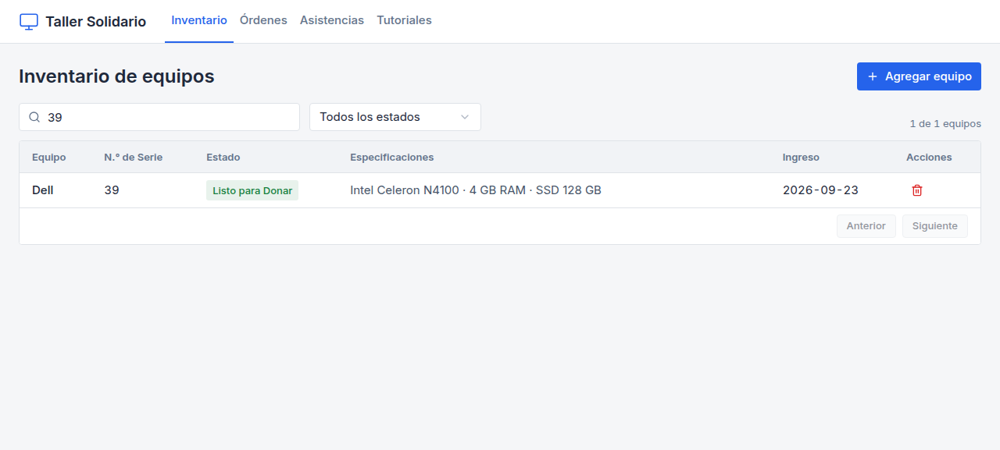

Rama: feature/ordenes
Commits validados: 17b2866, 5a61d12, 091a069
Archivos cambiados: NotebookFormModal.tsx, FormModal.tsx, OrderNotebookColumns.tsx, OrderDetailPage.tsx, useOrder.ts, useAvailableNotebooks.ts, useUpdateNotebook.ts, useCreateNotebook.ts, notebook.interface.ts, order.interface.ts, NotebookOrderBlock.tsx, index.css
Sistema: Dev server Vite en localhost:5173 + Supabase remoto enlazado biedfvxlnwmapqiwlgtr
Identidad: anon key (sin auth en la app)
Fecha: 2026-11-21
notebooks.serialNumber=39 → model: "Latitude 3190 TEST"model: "Latitude 3190" (HTTP 200, verificado en base)
| # | Escenario | Resultado | Evidencia |
|---|---|---|---|
| V17 | OrderDetail: click en fila → modal solo lectura | PASS | Campaigns deshabilitados, sin botón guardar |
| V18 | OrderDetail: sin NotebookOrderBlock | PASS | No aparece link ni bloque "Orden de donación" |
| V19 | Inventario: notebook sin orden → editable | PASS | Campos habilitados, estado habilitado, botón guardar visible |
| V20 | Inventario: notebook con orden → editable excepto estado | PASS | Campos editables, estado disabled, botón guardar visible, OrderBlock visible |
| V21 | Inventario: editar y guardar notebook sin orden | PASS | Modelo actualizado en base, revertido |
| V22 | Inventario: click en link del OrderBlock → navega a orden | PASS | URL correcta /ordenes/8de4efe5..., detalle de Escuela 456 |




| Check | Resultado |
|---|---|
npx vitest run | 97/97 passed (13 files) |
npm run build (tsc -b + vite) | ✓ built en 7.19s |
npm run lint | 27 problems (25 errors, 2 warnings) — baseline anterior era 26; +1 error nuevo por any en useUpdateNotebook.ts:5 (preexistente, no introducido por esta fase) |
Ninguno encontrado en esta corrida.
6/6 filas PASS. Todos los cambios de la fase de codeo (modal solo lectura en OrderDetail, editable en Inventario con estado bloqueado por orden, OrderBlock condicional, invalidación de queries, link de OrderBlock) funcionan como se decidió.